腾讯地图导航SDK开发指南（Android版）
概述
腾讯地图导航SDK（Android版）是一套基于Android 2.3及以上设备的应用程序接口，通过该接口，您可以轻松使用腾讯地图导航服务。下面对腾讯地图导航流程做简要概述：
腾讯地图导航SDK主要负责导航参数设置，如起终点、导航偏好、途径点等，然后进行路线规划。当路线规划成功后，将规划的导航路线传递给导航引擎，导航引擎结合定位信息，进行导航，然后再将导航信息回调给导航SDK。导航SDK根据回调，使用腾讯地图SDK资源进行导航过程的展示。
API是提供给那些具有一定Android编程经验和了解面向对象概念的读者使用。此外，读者还应该对导航产品有一定的了解。您在使用中遇到任何问题，都可以及时向我们反馈。
环境搭建
这里我们只提供eclipse 和Android Studio下的腾讯地图导航SDK的工程配置方法。
1、准备工作
腾讯地图导航SDK使用腾讯地图SDK（3D地图矢量版）的资源进行导航的展示工作，因此您在使用导航SDK之前，应先配置腾讯地图SDK环境，具体请您参考腾讯地图SDK开发指南。
2、eclipse
将下载到的压缩包解压，将"TencentNaviSDK_*.jar"（该jar包命名规则为 TencentNaviSDK_vX.X.X.jar, X.X.X为三位版本号）拷贝到工程目录的libs文件夹下，此外，您还需要将对应平台的so文件拷贝到工程目录libs文件夹下对应的平台目录，如下图所示：
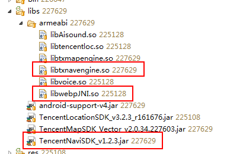
注：libtxnavengine.so为导航引擎库；libwebpJNI.so为wepb库，用于路口放大图、电子眼放大图的解码。导航SDK中不含语音播放库，如果使用语音导航，请使用自己的语音库进行语音解码。
3、Android Studio
方法一：将下载到的压缩包解压，将下载到的压缩包解压，将"TencentNaviSDK_*.jar"（该jar包命名规则为 TencentNaviSDK_vX.X.X.jar, X.X.X为三位版本号）拷贝到app/libs/文件夹下，右键选择"Add As Library"。
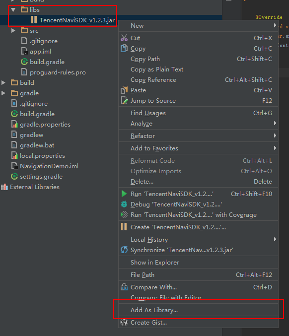
此外，需要您在app/src/main/目录下新建jniLibs目录，根据平台的不同将so文件放到对应平台的目录下，如图所示：
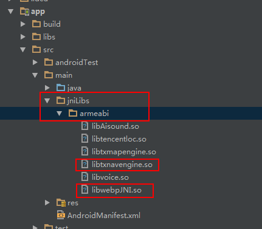
方法二：在"Project Structure"中选择"Dependencies", 点击"+"选择"File dependency", 选择要添加到工程的jar包即完成开发包的导入，如图所示：
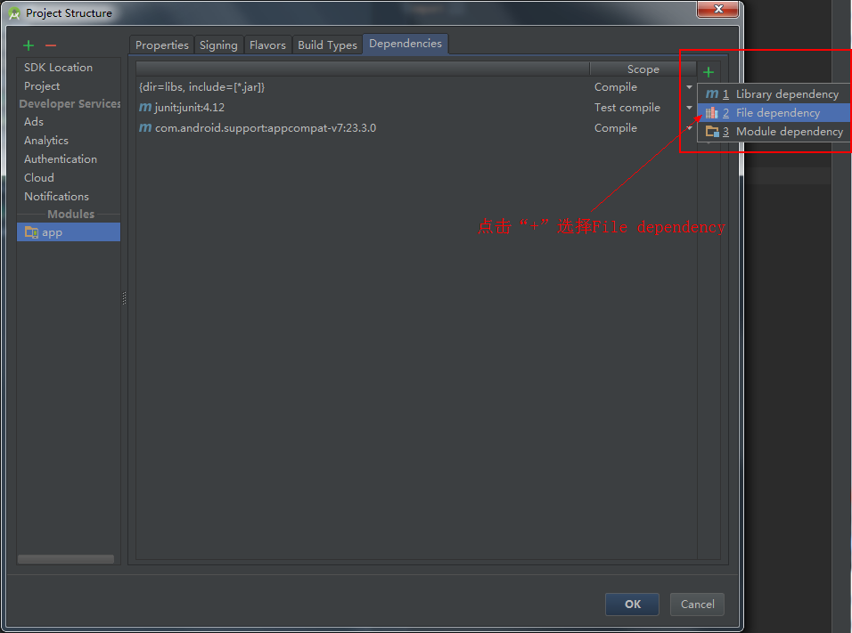
此外，需要您在app/src/main/目录下新建jniLibs目录，根据平台的不同将so文件放到对应平台的目录下，如图所示：
注：libtxnavengine.so为导航引擎库；libwebpJNI.so为wepb库，用于路口放大图、电子眼放大图的解码。导航SDK中不含语音播放库，如果使用语音导航，请使用自己的语音库进行语音解码。
导航Demo工程设置
1、添加权限
导航sdk需要使用网络，访问硬件存储等系统权限，在AndroidManifest.xml文件里，添加如下权限：
<uses-permission android:name="android.permission.INTERNET" />
<uses-permission android:name="android.permission.ACCESS_NETWORK_STATE" />
<uses-permission android:name="android.permission.ACCESS_WIFI_STATE" />
<uses-permission android:name="android.permission.ACCESS_COARSE_LOCATION" />
<uses-permission android:name="android.permission.ACCESS_FINE_LOCATION" />
<uses-permission android:name="android.permission.ACCESS_MOCK_LOCATION" />
<uses-permission android:name="android.permission.WRITE_EXTERNAL_STORAGE" />
<uses-permission android:name="android.permission.READ_PHONE_STATE" />
<uses-permission android:name="android.permission.CALL_PHONE" />
<uses-permission android:name="android.permission.READ_PHONE_STATE" />
<uses-permission android:name="android.permission.READ_PHONE_SINTERNETWIFI_STATE" />
<uses-permission android:name="android.permission.WAKE_LOCK" />
<uses-permission android:name="android.permission.CHANGE_WIFI_STATE" />
2、使用地图
导航SDK使用腾讯地图SDK资源进行导航展示，该地图SDK的详细使用说明，请参考腾讯地图SDK开发指南。Demo工程的AndroidManifest.xml文件中，在application节点里，添加名称为TencentMapSDK的meta信息，用于填写开发秘钥。开发秘钥可以到这里申请。
<application
android:allowBackup="true"
android:icon="@drawable/ic_launcher"
android:label="@string/app_name"
android:theme="@style/AppTheme" >
<meta-data
android:name="TencentMapSDK"
android:value="您的腾讯地图SDK秘钥" />
</application>
3、导航流程与参数配置
导航SDK主要负责导航参数设置，如起点，终点等，然后启动异步线程规划路线，路线规划成功后，把导航路线给导航引擎。导航引擎结合定位SDK，进行导航，把导航信息回调给导航SDK。导航SDK根据回调，使用地图SDK进行导航过程的展示。流程图如下：
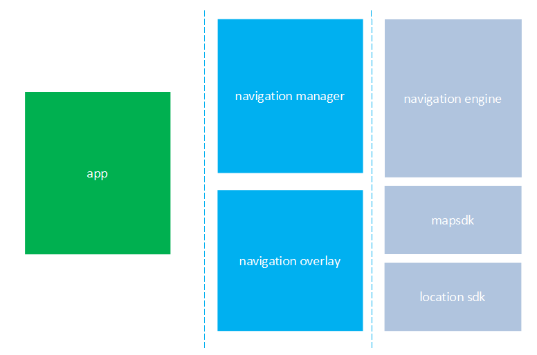
TencentNavigationManager类
导航SDK的设置是通过TencentNavigationManager类进行设置，并由该类暴露对外调用接口，TencentNavigationManager设置底图、比例尺缩放级别、设置导航过程中是否显示电子眼和路口放大图，设置导航的起终点等基本导航设置。此外对于导航的各种回调监听也是绑定到TencentNavigationManager。下面是TencentNavigationManager类的使用示。
// 定义TencentNaviManager对象
private TencentNavigationManager tencentNaviManager = null;
protected void onCreate(Bundle savedInstanceState) {
super.onCreate(savedInstanceState);
// 获取TencentNaviManager实例
tencentNaviManager = TencentNavigationManager.getInstance(this);
// 设置tts语音模块监听
tencentNaviManager.setTtsListener(ttsListener);
// 设置设置地图对象，这里使用TencentMap的实例
tencentNaviManager.setMapView(mMap.getMapView());
// 设置算路回调，非偏航
tencentNaviManager.setSearchRouteCallbck(searchRouteCallback);
// 设置偏航算路回调
tencentNaviManager.setSearchOffRouteCallback(searchOffRouteCallback);
// 是否开启路口放大图功能
tencentNaviManager.setCrossingEnlargePictureEnable(true);
// 设置导航过程中3d模式下，车标位于屏幕的比例
tencentNaviManager.setNaviFixingProportion(0.5f, 0.75f);
// 是否开启电子眼放大图功能
tencentNaviManager.setElectriEyesPictureEnable(true);
// 是否显示导航的Overlay
tencentNaviManager.setNavigationOverlayEnable(true);
}
设置起点、终点以及途径点
设置起点：tencentNaviManager.setStartPosition(startPosition);
设置终点：tencentNaviManager.setDestinationPosition (destLatlng);
设置途径点：List<LatLng> listPass = new ArrayList<LatLng>();
listPass.add(passPoint);
tencentNaviManager.setWayPoints(listPass);
算路
导航SDK启动异步线程规划路线，路线规划成功后，把导航路线给导航引擎。
算路：tencentNaviManager.calculateRoute();
使用SearchRouteTask进行异步的路线规划，SearchRouteTask的详情请参考API文档。
Demo规划的路线如图所示：
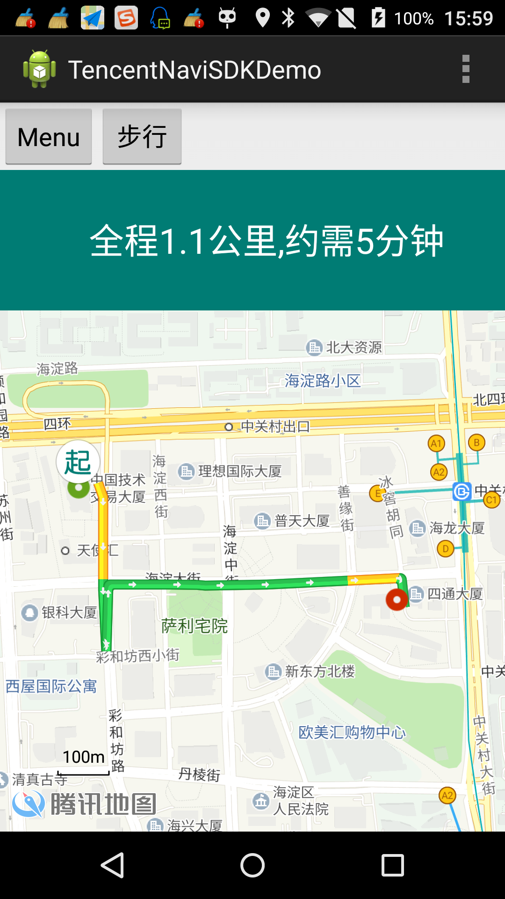
开始导航与结束导航
导航引擎结合定位SDK，进行导航，把导航信息回调给导航SDK。导航SDK根据回调，使用地图SDK进行导航过程的展示。
开始导航：tencentNaviManager.startNavi();
结束导航：tencentNaviManager.stopNavi();
导航过程中的地图展示：
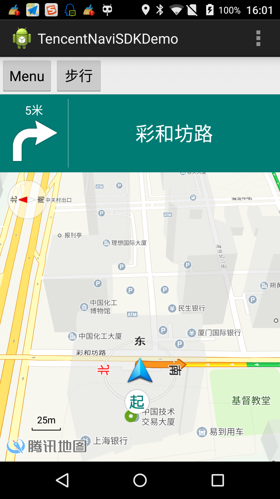
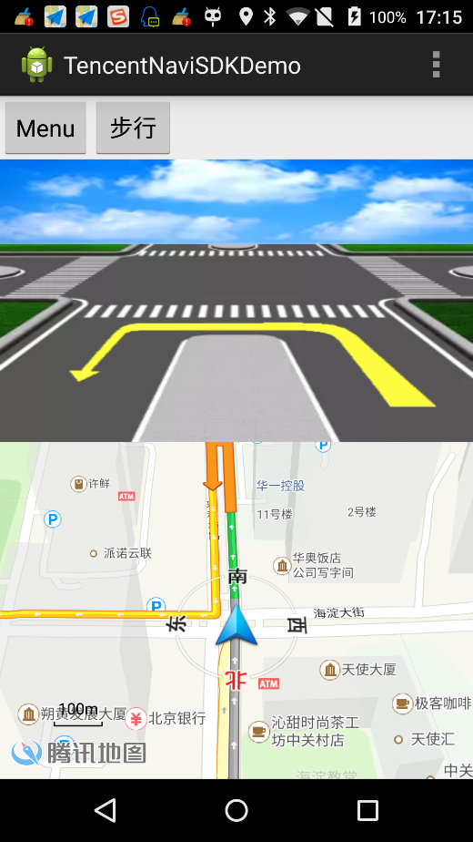
导航资源包括：
导航定位图标：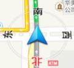
实时路况信息（彩虹蚯蚓）：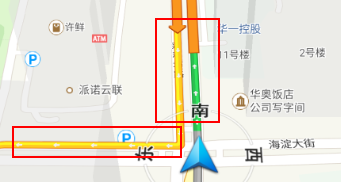
走过的路置灰：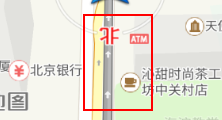
路口放大图：
其他的资源如车道线信息，电子眼放大图等，请您参考API文档。
导航回调
导航SDK提供了丰富的回调函数，来回调导航中的操作。所有的回调事件都绑定在TencentNavigationManager对象上，下面列出了腾讯地图导航支持的回调：
导航过程中回调 TencentNavigationManager.TencentNaviCallback
查询路线回调 （非偏航） TencentNavigationManager.SearchRouteCallback 查询偏航路线回调 TencentNavigationManager.SearchOffRouteCallback
上述回调的具体信息，请您参阅API文档。
注意事项
项目必须使用utf8编码格式，如果出现类似“at java.net.URLEncoder.encode”的错误，请检查项目编码格式。
导航SDK使用腾讯地图SDK（3D地图矢量版）的地图资源进行展示。请您预先配置腾讯地图SDK环境。
导航SDK不包含定位功能，建议用户使用腾讯定位SDK。
导航SDK不包含语音播报库，建议用户使用TTS语音进行语音播报。
如有问题，可以到腾讯地图开发者论坛，或者技术支持qq群寻求帮助。